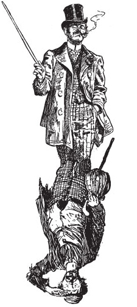
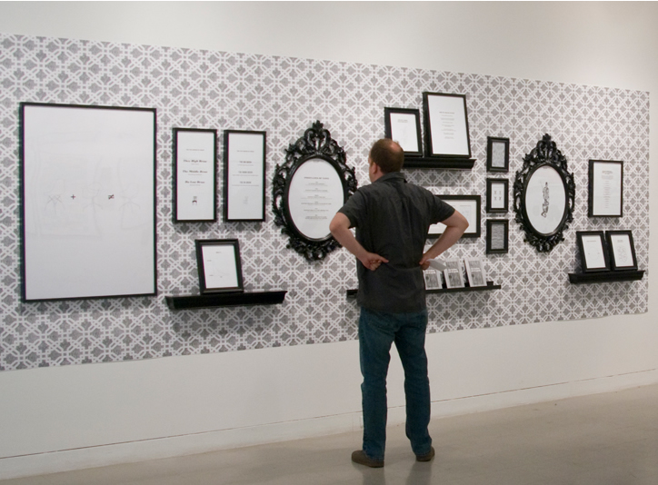
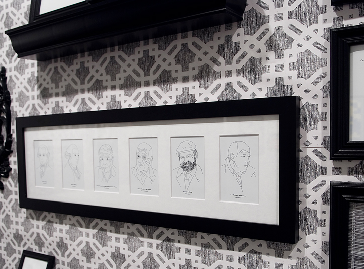
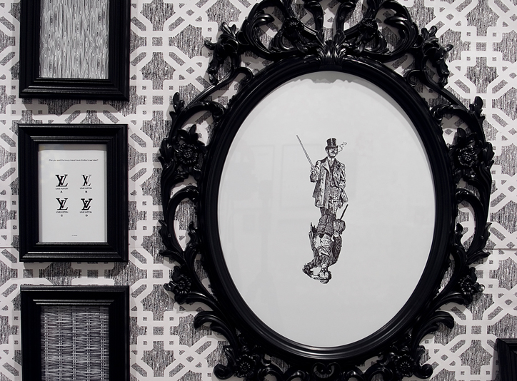
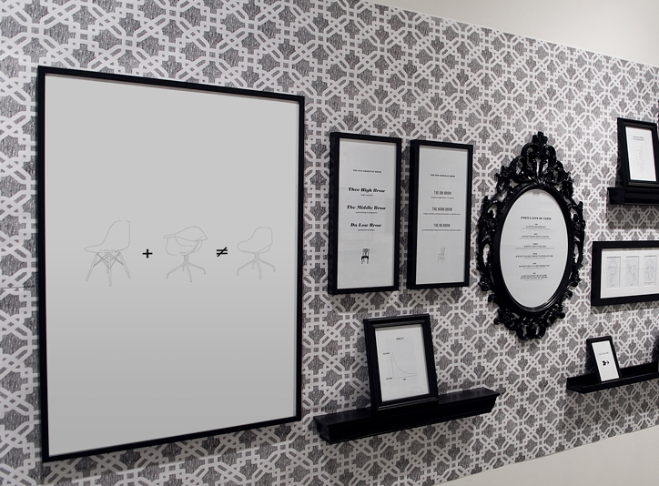
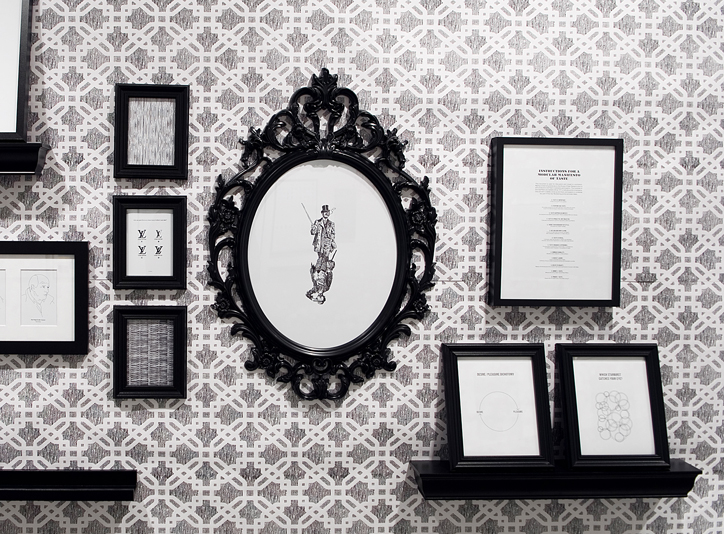

-  >
-
TOWARDS AN UNDERSTANDING OF TASTE
<>
AS DESIGN, HISTORY, AND PHILOSOPHY
TONY VENNE
GRAPHIC DESIGN · MASTERS OF FINE ART
MARYLAND INSTITUTE COLLEGE OF ART
BALTIMORE · MARYLAND
© 2009 -
POSTULATES OF TASTE
ALL ARTIFACTS HAVE AUTHENTICITY.
The true intention of an artifact’s existence can not be hidden from the audience.
AN ARTIFACT’S SALIENCE CREATES ITS EXISTENCE.
Exceptional artifacts stand out from their surroundings and become available to audiences.
AN ARTIFACT’S IDENTITY IS MALLEABLE.
An artifact’s identity possesses many meanings to many people, morphing an objects relevance with audiences.
AN ARTIFACT’S RELEVANCE IS INHERENT TO SITUATIONS, NOT THINGS.
Inventing relevance of an artifact invites unnecessary waste.
AN ARTIFACT’S QUALITY IS ITS MOST UNDENIABLE TRAIT.
Good quality will enhance both the artifacts form and function.
A DESIRE FOR AN ARTIFACT AND THE PLEASURE RECEIVED FROM THE ARTIFACT ARE A DICHOTOMY.
Desire can’t exist with out pleasure and vice versa.
<> -
THE OLD ORDER OF BROW
Thee High Brow:
high cultureThe Middle Brow:
everything in betweenDa Low Brow:
pawpula’ kulcha’THE NEW ORDER OF BROW
The Uni Brow:
making high brow universalThe Mono Brow:
<>
high, middle, and low brow have no distinction -
HISTORICAL VIEWS
The view of taste is approached through different perspectives through out history. Periodically, philosophers, sociologists, and art critics define taste by linking over-arching sentiments of the day. The taste of taste frames the fashionable preferences and choices made during each aesthetic period.
<> -
ENLIGHTENMENT DEFINES TASTE AS INDIVIDUALISTIC.
Eighteenth Century France is the dawn of defining taste, and the defining of good taste is the task of the monarchy. Even the realm of mathematics and science were defined by the king’s preference (he is usually a he, and he is usually French). The judgment of aesthetics gave two options: true taste (the monarchy) or false taste (everyone else). Enlightenment philosophy unveiled the idea of individuality. (“All men are created equal”) Philosopher Alexander Baumgarten calls for a new science of perceptual knowledge: aesthetics.
Addressing this need risen by his predecessor, Immanuel Kant works through aesthetics in the Critique of Judgment, writing on reflective judgment: the agreeable, the beautiful, the sublime, and the good. He approaches taste as different types of decisions one makes regarding an experience. He suggests that the individual is the one making these judgments, not society. Taste is a group of ideas (or decisions) rather than singular responses to an object or situation, the sum of many parts. Individual experiences differ from person to person when viewing the same subject. One may experience a mountain as beautiful, while another may have a feeling of sublime.
Another philosopher thinking during the period, David Hume, wrote an essay suggesting taste varies from individual to individual. Genuine taste allows for variations in customs and manners; (noting to himself and his fellow philosophers) as a critic, one must forget one’s own “peculiar circumstances.” His thinking is separating the idea of truth from taste and giving permission for tastes to be different. He reminds fellow man that we all can have our own tastes.
<> -
MODERNISM REJECTS INDIVIDUAL TASTE.
An evolutionary shift in the paradigm of taste happens with modernism. Instead of taste magically coming from each individual, the modernists suggest an underlying, recognizable pattern to taste, disseminating through society. This thinking attempts to makes sense of the world by exploring universality, trying to create an orderly organization through which the world works.
Art critic Clement Greenberg discusses the relationship between the fine arts and the popular arts. His writing defines kitsch as the second-hand product of high culture. Avant garde artists, such as Picasso, Mondrian, and Kandinsky, create a visual product that results in new aesthetics for the populace. Taste is the created by the avant garde. Trickling down from artists and their dealers, taste slowly seeps through popular culture like rainwater through the stratified ground soil. The Matthew Barney sculpture of today may end up as the coffee table of tomorrow.
Another approach to the modernist idea is that taste can ebb and flow through social groups, our identity group which we relate. Using a more data-driven approach to understanding taste, sociologist Pierre Bourdieu administers extensive testing of French society, revealing that perhaps taste does not only lie in the individual. Our social status affects what we like. While individuals may decide on specific preferences, they tend to stay with in the realm of their subculture. His results also demonstrate that regardless of income, people still tend to make aesthetic choices that reflect their subculture. Harley Davidson owners will always spot each other wearing leather chaps, regardless of whether they are outlaw bikers or merely weekend warriors.
<> -
POST-MODERNISM APPROPRIATES ALL TASTES.
The current state of affair on taste takes its cues from post-modern art, appropriating subcategories of taste as subject matter in work. By borrowing styles from previous periods and cultures, artists and designers strip away the meaning of ornament, recontextualizing the design for each situation. Style becomes the ready-made. Think of college frat boys with Pacific Islander tattoo designs on their biceps. Ideas of beauty, luxury, and brow shift, inter-mingle, and mash-up to reflect the peoples own tastes, sub-cultures, and interests. Post-modernists reject universality. Taste resides in both individuals and from outside social influences.
Guess what? Beauty is dead. And Arthur Danto proclaims it in Transfiguration and the Commonplace; post-modern art finds new ways to delight the senses rather than attempting to find truth through beauty. Objects and art considered beautiful or pleasurable to the eye (balance, composition, symmetry) are no longer the pursuit of high art. Fine art becomes an intellectual pursuit rather than an aesthetic universality. (When was the last time you wandered into an art gallery, in Chelsea?)
And guess what else? Kitsch is legit. Bad taste isn’t necessarily bad if the viewer’s intentions are the same as those viewing “high art.” Taste does not come from true authenticity; it comes from people’s enjoyment and their sense of personal fulfillment. Art critic, Dave Hickey suggests that genuine taste (good taste) comes from this acknowledgment rather than what critics proclaim is good or authentic. The pursuit of pleasure is as important as a pursuit of truth. Hickey writes about the beautiful fakeness of the Las Vegas strip, the refugee of our modern world. Fake New York, fake Paris, and fake Venice are just as real to their visitors as the authentic locations.
<> -
INSTRUCTIONS FOR A MODULAR MANIFESTO OF TASTE
This document is open for discussion and closed to conclusion. Nailing numerical grievances to the House of High Design's door is anti-productive and final; it prevents participation. The modules of this manifesto are marked with an “X” to indicate points of entrance. One can add or delete, move up and down, and expand or condense any part of this list. Numbering points excludes ideas.
< >X. Taste is important.
Preferences guide every action.
X. Everyone has taste.
Our tastes surface on our every decision, from what color socks to put on in the morning to what style to build our houses.
X. Taste happens in context.
Our decisions are made in environments which constantly affect our choices.
X. Taste is proactive, not reactive.
Think about shopping for goods as opposed to admiring artifacts.
X. There is no hierarchy of style.
All styles are created equally.
X. We add our own flavor.
If we do not see what we like then we make it. We constantly create flavors to add to the pot.
X. Taste is social.
In the past, taste was thought to reside in an individual. However, we now know taste forms socially within subcultures.
X. Taste enhances experience.
The enjoyment of typography, hand towels, or architecture increases when it appeals to the audience’s taste.
X. Embrace banality.
Banality is the celebration of the ordinary.
X. Reject luxury.
Luxury is the false idol of taste. Artifacts of luxury clutter museums and become obsolete to society.
X. Death to Beauty.
Beauty will die because of its concern with vanity and its lack of concern with ideas.
X. Money ≠ Taste.
Money will not buy taste, look at Paris Hilton.
X. Power ≠ Taste.
Power will not create taste, look at Kim Jong-Il.
-  <>
-  <>
-  <>
-  <>
-  <>